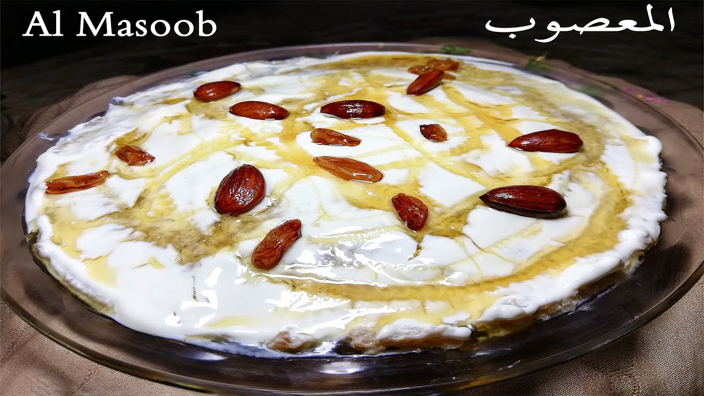

Home
Masoob Recipe

Description
Masoob is a bread pudding prepared with mashed bananas, honey, and cream along with whole wheat bread. The meal provides an ideal combination of richness from the cream, sweetness from the bananas and honey, and earthy nutty flavor from the bread. Masoob is delicious both as a sumptuous dessert and as a wholesome breakfast.
Ingredients:
- 3 large bananas.
- 4 lebanese bread.
- Tablespoon of semna.
- A can of qeshta.
- Honey.
Steps:
- Cut bananas into slices and blend them until of thick consistency.
- Tear bread into small sized pieces and blend. Do not blend into powder.
- Heat pan and place tablespoon of butter, then place the blended lebanese bread and continue to mix until it's a little fried. Keep mixing and don't let it settle.
- After the bread is finished frying, place it in a seperate bowl then pour the blended bananas ontop.
- Pour half a can of qeshta into the mixture. Make sure the qeshta isn't solid or else it'll be hard to mix. Microwave if needed.
- Pour desired amount of honey. I prefer around 2 and a half tablespoons.
- Start mixing and continue mixing until everything sticks together.
- Once you're done mixing scoop and place into desired plate/bowl.
- Spread the rest of the qeshta ontop.
- Pour some honey ontop.
- Enjoy!